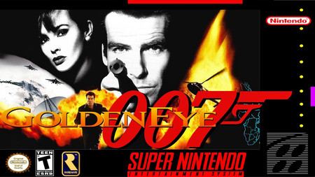

Mario Kart
Es un juego de carreras arcade que salió para la consola Nintendo 64. Es el segundo juego de Mario Kart, secuela del exitoso juego de Super Nintendo, Super Mario Kart. Como su antecesor, es un juego de conducción de karts protagonizado por personajes famosos de Nintendo, (Mario, Luigi, Yoshi...) en el cuál tienes que vencer las copas en las distintas cilindradas.
Conker-Bad-Fur-Day
Es un videojuego de plataformas de 2001 desarrollado y publicado por Rare para Nintendo 64. El juego sigue a Conker, una ardilla roja codiciosa y bebedora que debe regresar a su casa con su novia Berri. La mayor parte del juego requiere que el jugador complete una secuencia lineal de desafíos que implican saltar obstáculos, resolver acertijos y luchar contra enemigos.

The Leyend Of Zelda
La historia del juego se enfoca en el joven héroe Link, quien emprende una aventura en el reino de Hyrule para detener a Ganondorf, rey de la tribu Gerudo, antes de que encuentre la Trifuerza, una reliquia sagrada capaz de concederle cualquier deseo a su poseedor.
GoldenEye 64
Es un videojuego de disparos en primera persona y espionaje desarrollado por Rare y publicado por Nintendo para su consola Nintendo 64 en 1997. El título está basado en la película homónima de James Bond de 1995. Es el título posterior a James Bond: The Duel, lanzado para varias plataformas de Sega en 1993.